Description
Short description
Shivaliva is a single-player life-sim where every job is a puzzle. Live on a floating island in space, play well to earn gold, and spend it on new looks, a home or your own ship. Make friends, or more, with islanders who remember you, then sail the stars, where even the fights are puzzle duels.
The demo starts you on Cradle Rock with nothing. You take work at the mine, the grove, the tavern sink and the coin table, and each job is a different puzzle with its own rules. You sit down at the inn's poker table. You walk into the Cradle Gym and climb its five-rung ladder in Skirmish, a two-board versus block puzzle where your cleared lines land on your rival's floor. Topping the ladder opens the Labyrinth, the first of the Ordeals, which stands across the sky on Driftspar, and its beasts wait one at a time. To get there you sign on with the ferry's crew, or buy a ship at the sky dock and hire your own. Every duty station aboard is another mini-game, and a voyage can end in a battle in the sky and a boarding. Nothing ends: the Beta Demo is a sandbox, and you can buy a lot and have the shipwright build you a house.
The islanders are the thing players find on their own. Nobody has to talk to anyone, but walk up to any of them and they know where they are standing, what they are doing, and who just won at the table. They remember your last conversation the next day. Word about you travels: win at the gym and the barkeep has heard about it before you reach the bar. Needle a fighter about their record and they may challenge you for it.
It is made by one person in Godot: a world of floating islands, the Stardust you sail through between them, and a crew of your own.
History
The game has been public on itch.io since June 2026 as a Windows download, and over June and July Cradle Rock was rebuilt as a 3D island.
On 16 July 2026 it gained version numbers (v0.1.0), printed in the corner of the title screen so every bug report could quote them.
On 17 July the backpack and shops started showing every item as itself, in 3D, and clothes became buy-then-wear with dyes you purchase once and keep.
On 1 August the title screen became key art, and the itch page was refreshed with shots of the 3D island.
On 13 August (v0.10.0) a portrait-based character creator arrived with 23 faces, 38 haircuts and 18 beards, along with a loading screen and a Blind Run option that switches off all guidance.
Between 16 and 21 August all six mini-games were converted from flat boards into 3D rooms without changing a rule. v1.0.0 followed on 22 August, v1.1.0 on 27 August made the island continuous terrain, v1.1.4 came on 28 August, v1.3.1 on 1 September, v1.4.0 on 2 September, v1.4.1 on 3 September, v1.5.0 on 3 September, five builds on 5 September 2026: v1.6.0, v1.7.0, v1.7.1, v1.8.0 and v1.9.0, v1.9.1 on 6 September 2026, v1.10.0 and v1.11.0 both on 7 September 2026, v1.12.0 on 8 September 2026, v1.13.0 on 9 September 2026, v1.14.0 on 13 September 2026, v1.15.0 on 14 September 2026, v1.16.0 on 15 September 2026, v1.18.0 on 19 September 2026, v1.19.0 on 20 September 2026, which cut the opening walkthrough from twelve steps to five and the island tour from nine stops to six, v1.20.0 the same day, v1.20.1 that night, which rebuilt Navigation's round, ceiling and deck, v1.21.0 on 21 September 2026, which added the space battle and the Gunnery station to the voyage, v1.21.1 on 24 September 2026, which gives all twelve mini-games a finishing pass and puts Coin Drop on the tavern wall, v1.21.2 on 27 September 2026, which remakes the trophies, icons and duty stations as objects from the island and puts an hourglass beside the Mine and the Grove, v1.21.3 the same day, which fixes the symbols the browser version could not draw, v1.22.0 on 1 October 2026, in which the captain of a ship you sign onto fights her battles while you keep your station, Driftspar gains her lighthouse and its keeper, and the islanders sit, sleep, work and turn to look at you, v1.23.0 later that night, v2.0.0-alpha on 3 October 2026, in which the islanders laugh in their own voices and their voices keep pace with their words, card players go home when they go bust and say hello when they sit down, armour shows on every health bar, and the Mine and the Grove pay for how well you work them, v2.0.1-alpha on 4 October 2026, in which the sky becomes a turning cosmos of planets and nebulae with the haze over the islands cleared away, a ship's battle gets its own song, voyages pay a wage for every leg you work, and the Labyrinth's chart maps the maze as you walk it, v2.0.2-alpha on 5 October 2026, in which the card tables get new cards, you can sit down on the benches, and a ship no longer sails on into port while her captain is still fighting, v2.0.3-alpha on 6 October 2026, in which the islanders walk round the tables and stools instead of over them, a bar stool is no longer a step you can climb, and the ships get more Sailing stations, v2.0.4-alpha on 7 October 2026, with a lighter graphics setting that the game picks by itself on weaker computers and a Windows download that is a single file, v2.0.5-alpha on 8 October 2026, in which the Space Galleon and the Man-o'-War get their decks laid out with a Sailing station at every mast, the duty report after each leg of a voyage moves on by itself, a fight's music no longer follows you back to your station, and the little Dinghy leaves the shipwright's list, v2.0.6-alpha on 11 October 2026, in which the ships trade their sails for steam, the Sailing station becomes Stoking at the ship's boiler, the outfitter sells a new wardrobe in two colours you pick at the counter, and every face in the game, the Ordeal beasts' included, is drawn as just the head with a dark outline, v2.0.7-alpha on 11 October 2026, in which every keepsake you earn in the Steam version is also a Steam achievement, the game's gold is a coin of its own, the Stoking station is a coal scuttle beside the boiler, and the Brig is let out wider, with a walkway two people wide to every station. Alpha ended there: v0.0.1-beta, on 13 October 2026, began the Beta Demo, a sandbox with no ending, in which your first crossing earns Off the Rock and play goes on, the island's buildings turn steampunk and each wears a sign of its trade, Skirmish's boards are framed in iron with each fighter's health standing in the frame, the forge makes fifteen swords and seven bludgeons to order in your colours, and a fight, a shop and every moment with an islander has its own sound. v0.0.2-beta, on 15 October 2026, gives every weapon its own strikes in a Skirmish duel, adds 21 hairstyles, 8 beards and 11 dye colours to the character creator, keeps long hair whole when you turn your head, gives walkers room to pass each other, and has the islanders say plainly when they have talked themselves out for the day and when they will be back. v0.0.3-beta, v0.0.4-beta and v0.0.5-beta followed on 15 October 2026: the long-range weapons fire like themselves in a duel, a ship's stations are ready the moment you press them, and the Steam build sells nothing off Steam. v0.0.6-beta, on 16 October 2026, gives every hand five fingers, so two people hold hands, high-five palm to palm and kiss for real; turns Carpentry into twelve five-square timbers you turn and flip; makes Venting a match of cut gems with specials from the first level; lets the strangers on the islands live days of their own; sends raider crews in tiers matched to your skill; rests a fighter's axe, hammer or mace on the shoulder; keeps the picture smooth on fast screens; and gives the character creator blush and lashes. A ship you crew for now casts off on her captain's call a minute after you come aboard, your own ship carries only the crew you hire, only a raider ever stands opposite you in a boarding, the demo's milestone card rises when the Labyrinth King falls, and the pause menu gains Report a bug. The current v0.0.7-beta, on 18 October 2026, makes Stoking a full brick-breaker: twenty-seven things to catch or dodge as the coal breaks, points for every coal, firedamp that sets off its neighbours, an ember that burns white-hot and a starcoal diamond worth up to 2,000; a raider crew is now the same in the sea battle and the boarding that follows, and a teammate's stun no longer shows on your own board.
On 17 September 2026 the game settled on its final name, Shivaliva.
Features
What the Beta Demo contains.
- Cradle Rock, Driftspar, and a ship to crew. A small island with a tavern, a forge, a market, a gym, a mine, a grove and a sky dock, and a rock across the sky where the Labyrinth stands. Sign on with the ferry's crew, or buy a ship at the dock, hire a crew and sail out.
- Twelve mini-games. On the island: Mining (a forage grid carved into rock), Coin Drop (the tavern's coin table, a pegboard the coins bounce down), Lumberjacking (a log frame in the grove), Dish Duty (the tavern sink), Skirmish (a two-board versus block puzzle: clear lines and steel lands on your rival's floor) and Poker (the inn's table, ten stools round it). On the ship: Stoking (batting an ember off the coal shovel into the coal face of her firebox, to keep her boiler drawing), Navigation (a bubble shooter at the wheel that steers the leg), Gunnery (ramming powder, wad and shot into the cannons as the deck brings them down), Carpentry (sealing the holes a battle opens in the hull) and Venting (clearing the Stardust haze out of the hold). And when a raider catches you: the Space Battle (ship against ship in a box that closes in, with a grapple to board her).
- The Cradle Gym ladder, then the first Ordeal. Five rungs of Skirmish against named islanders, then the Labyrinth Ordeal on Driftspar and its beasts, one at a time.
- Character creator. Every option shown as a portrait: 14 faces, 38 haircuts, 18 beards, brows, scars and war paint. You start in plain clothes and buy the rest.
- One currency. Gold. A shop that shows the item itself, not an icon, dyes you buy once and keep, a backpack, and a chart of the island.
- Islanders worth talking to. Optional, and easy to miss. Each knows the room they are standing in, what they are doing, and what just happened. They remember you between conversations, and they pass word about you across the island.
- Hearties, and sweethearts. Rapport runs from Despised to Confidant, and it changes what people say and what they will do for you. Put someone on your hearties roster or your crew, and if the feeling runs both ways, court them: fond, then smitten, then sweethearts.
- A home of your own. Buy a lot, the shipwright builds the house, and you furnish it.
- No ending. The Beta Demo is a sandbox: once you have crossed to Driftspar, keep playing for as long as you like.
- Everything drawn in 3D. Every board is a room with objects in it, and the rules underneath are unchanged.
- Windows, free, no sign-up. About 421 MB.
Planned
The full game goes past Cradle Rock: eight Ordeals, each on an island of its own with a master waiting at the end, and every one you beat is a bearing on the secret island. More mini-games along the way.
Videos
The opening, the tavern and the bout were captured on v2.0.5-alpha, as was the short loop of each of the twelve mini-games on the front page but Stoking's, captured on v2.0.7-alpha; the full takes (1280x720 with the game's own sound) are available on request. Ask via the Contact section.
Images
Seventeen screenshots, PNG, all captured on 11 October 2026 at the High graphics setting, sixteen from v2.0.5-alpha and Stoking from v2.0.7-alpha: the twelve mini-games, the job notice, the outfitter and the character creator at 1280x720, and the two tavern shots at 1920x1080. Click one for the full-size file. All seventeen are in presskit.zip.

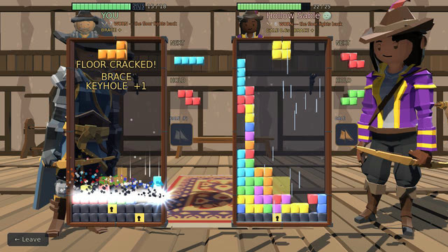

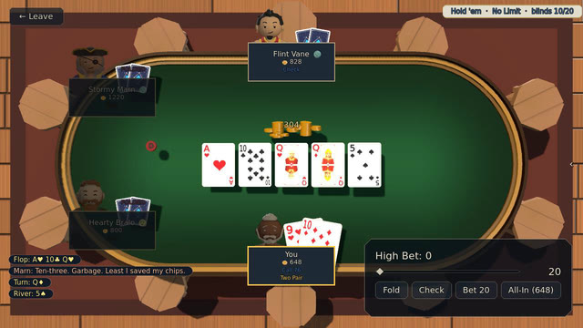

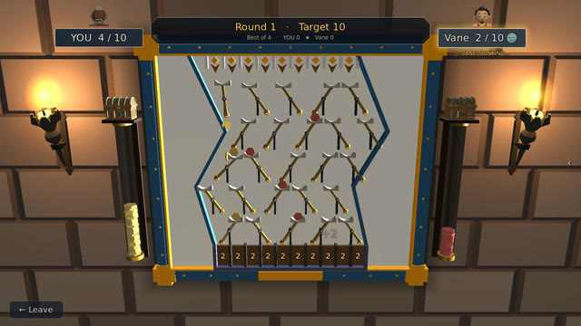

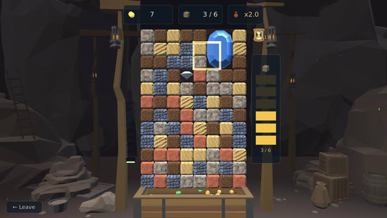

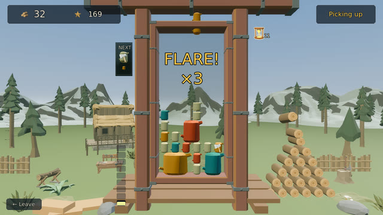

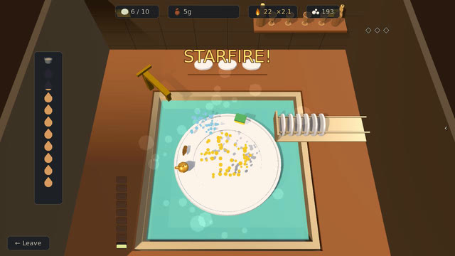

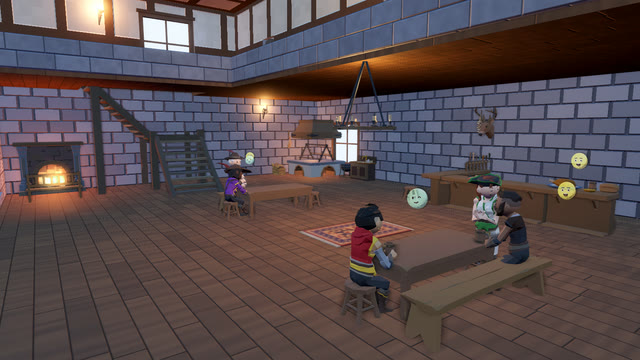

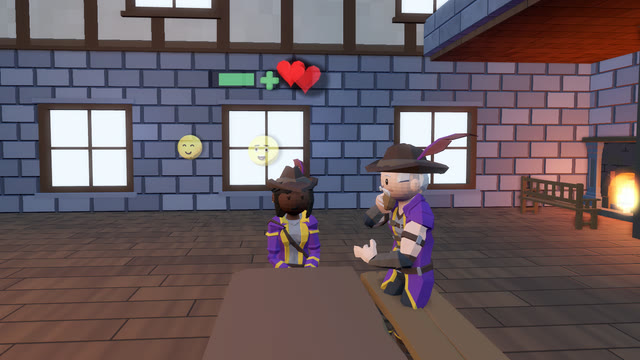

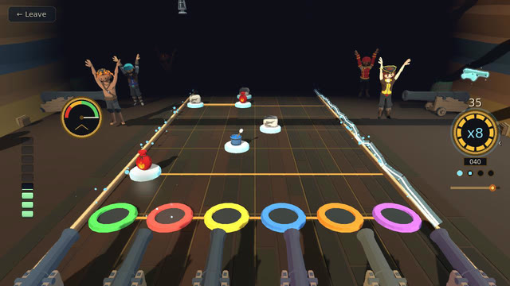

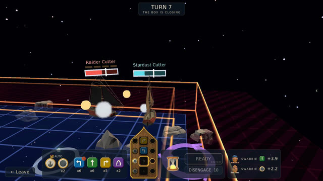

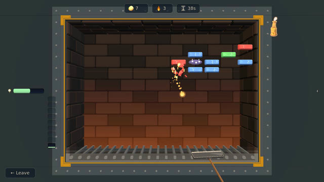

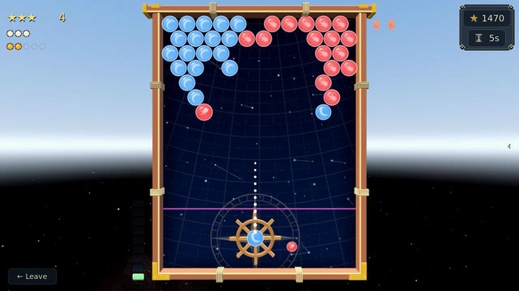

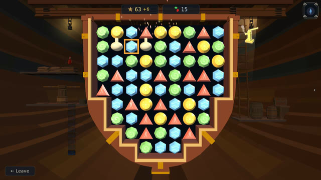

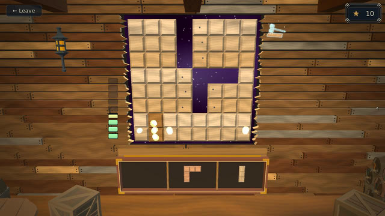

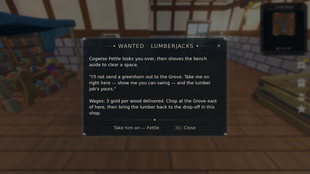

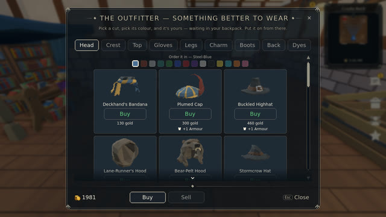

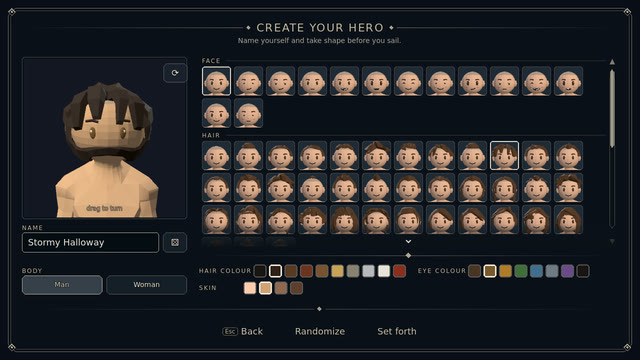
Logo & Icon
The logo is the name, cut from the game's own blue gem. Please use it as supplied: no recolouring, no added emblem, and never re-typeset as text. Use the files with the rim of light over the game or any footage, and the clean ones on backgrounds you design.


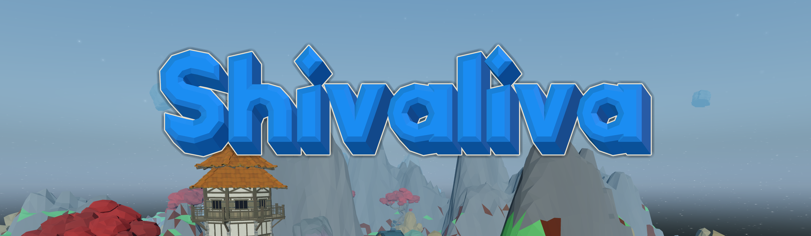

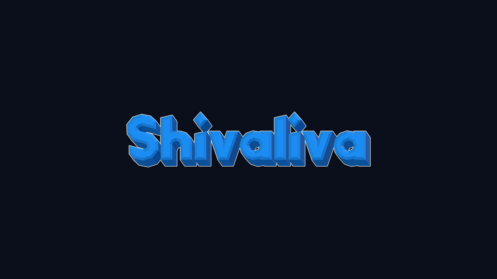

Credits
Trojan Bulldog: design, code, world, writing, and everything not listed below.
Art
Characters and environments use Synty POLYGON asset packs, Microsoft Rocketbox motion capture (MIT, © 2020 Microsoft) and Mixamo animations, used under their respective licences.
Music
Epic Medieval Music Pack I by pegonthetrack & ELVGames (purchased licence). Tracks used: Theme, Clear Waters, Sewage, War, Fortified, End of the Road. Credits to pegonthetrack & ELVGames: elv-games.itch.io, linktr.ee/pegonthetrack.
The gun deck's songs, by Kevin MacLeod (incompetech.com), each credited by title: "Galway", "Kings of Tara", "Village Consort", "Netherworld Shanty", "Club Seamus", "Thatched Villagers", "Master of the Feast", "Pippin the Hunchback", "Celtic Impulse", "Adventures in Adventureland", "Fiddles McGinty", "Minstrel Guild". Licensed under Creative Commons: By Attribution 4.0 License (https://creativecommons.org/licenses/by/4.0/).
Sound
| Files | Origin | Licence | Credit |
|---|---|---|---|
voice_talk.ogg, voice_talk2.ogg | "Talking Synthesizer" by tcarisland (OpenGameArt), via GDQuest Learn 2D Gamedev | CC-BY-SA 4.0 | "Talking Synthesizer" by tcarisland (CC-BY-SA 4.0) |
type_key.wav | "Keyboard soundpack 1" by unicaegames (OpenGameArt), via GDQuest Learn 2D Gamedev | CC0 | none required (credit appreciated) |
pickup.wav, powerup.wav, hit.wav, bop.wav, hurt.wav, ko.wav, pain.wav, laser.wav | GDQuest "Learn 2D Gamedev with Godot 4" | CC-BY 4.0 | Additional assets CC-By 4.0 GDQuest (https://www.gdquest.com/) |
explosion.ogg | Kenney (Sci-Fi Sounds / Digital Audio), via GDQuest Node Essentials | CC0 | none required (Kenney, https://kenney.nl, credit appreciated) |
UI, puzzle and world effects: error, accept, decline, window_open, window_close, trophy, puzzle_soft, puzzle_bright, rock_break, wood_break, item_get, fall, swish, chest | Universal Sound Effects: User Interface Pack 1 (Puzzle Game), User Interface Pack 2, Game Sound Effects 2 | Purchased licence | none required |
The mini-games' coins, cards, chips, plates, axes, picks, sails and blows: coin, clack, toss, card_*, chip_*, drop_*, plate_*, axe_chop*, pick_strike*, blow_*, sail_*, grapple_hook* and more | Kenney "Impact Sounds", "RPG Audio", "Interface Sounds" and "Casino Audio", cut to length | CC0 | none required (Kenney, https://kenney.nl, credit appreciated) |
eat_bite*.ogg | "Crunch sounds (cucumber)" by cogitollc (OpenGameArt) | CC0 | none required (credit appreciated) |
Everything else, including pop, whoosh, thunk, chime, buzz, click, the tavern sink's water and steam, the hearth, and the Skirmish, Helm, Gunnery, Lumberjacking and Mining sets | Synthesised in-engine, original to this project | Original | none |
Voices
NPC voices are generated on the player's own machine, and nothing is sent anywhere. Made with sherpa-onnx (Apache-2.0) using the Piper en_GB-vctk-medium voice model, trained on the CSTR VCTK Corpus (University of Edinburgh), CC BY 4.0.
Shivaliva is not affiliated with or endorsed by Synty Studios, Microsoft, Mixamo, GDQuest, Kenney, Kevin MacLeod, Three Rings or Grey Havens.
Contact
- Game page and devlog: tairoyzone.itch.io/shivaliva-shanty
- Developer profile: tairoyzone.itch.io
- X: @trojanatoplat
- Email: tairoy.zone@gmail.com
Keys, interviews and the full-length clips: send a message on either channel above.